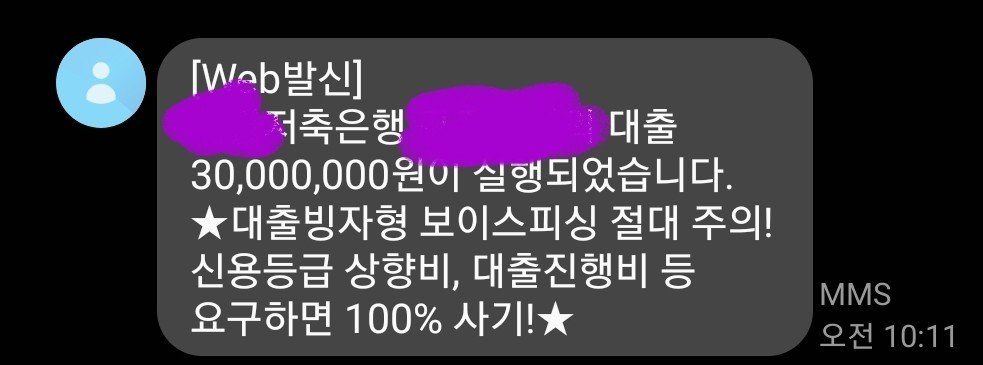
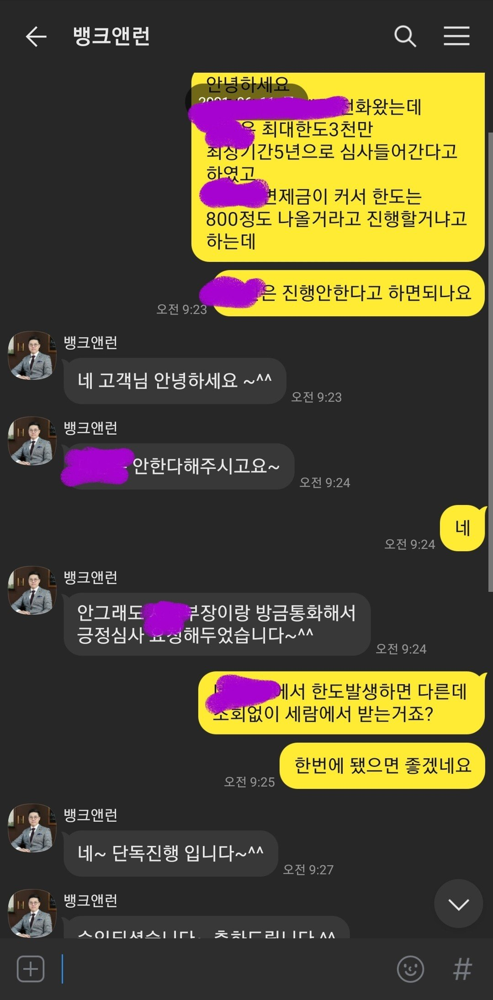
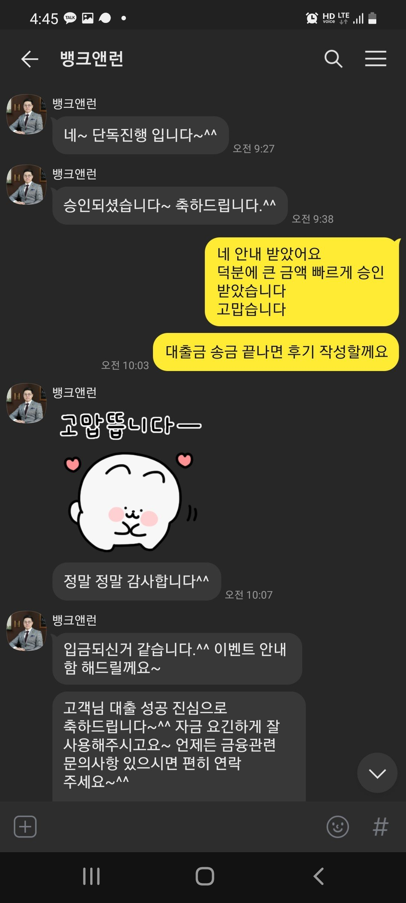

[개인회생자대출] 개인회생자 대출후기
재직형태:정직원
재직기간:7년
사대보험가입유무:유
소득:연 6800
신용등급:개인회생중
채무내역:대부업체 200만
필요서류:초본,자격득실,납입증명서,통장사본,거래내역3개월,신분증
개인회생36회중 29회납 1.4회미납
대부 200만 보유
월변제금234만 으로 변제금이 컸습니다
김용혁 사장님과 카톡으로 상담신청 하였고
필요자금은2천만이상으로 요청드렸습니다.
우선은 금리 좀이라도 낮출수 있는 저축은행 두군데
심사를 넣었고 한군데는 최대한도 3천만 심사
한군데는 변제금이커서 한도는 8백만발생
3천만 업체만 단독진행하였고 김용혁사장님이 업체부장님께 힘써주신 덕분에 3천만원 한도 받을수 있었습니다.
미납금 과 대부대환하고 2460만 입금 받었습니다
신경써주셔서 감사드립니다


